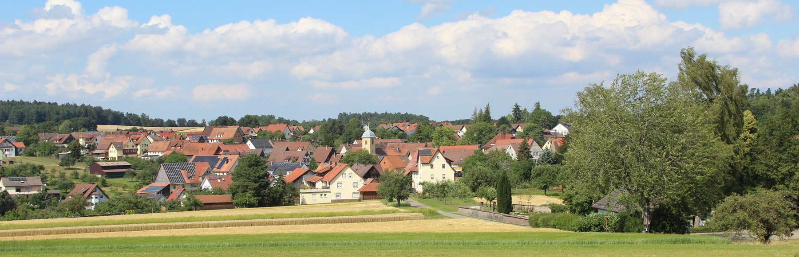

Schönes Dorf Mindersbach
Schönes Dorf Mindersbach
Der Verein

Seit 1973 kümmern wir uns um unser Dorf. Wir pflegen Wiesen im Mindersbacher Tal, organisieren das Mostfest und bieten Kurse rund um Obstbäume an.


Mindersbach entdecken
AnfahrtskizzeSchematische Ortskarte
Rathaus
Der grüne Schriftzug an der Fassade war die Vorlage für den Ortsnamen auf dieser Website.
Rathausfoto herunterladen
Bürgerhaus
Hier wurde 1973 der Verein gegründet. Damals war das Gebäude noch das Schulhaus.
Zur VereinsgeschichteDorfkirche
Auf dem Kirchendach ging 2001 die Solaranlage des Vereins ans Netz.
Zur SolaranlageTermine
Neue Termine gibt der Verein im Mindersbacher Mitteilungsblatt bekannt.